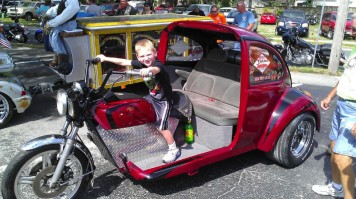
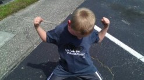

Our Story
From Our Family to Yours
Built on family. Driven by community.

Built on Family. Driven by Community.
More than an auto glass business.
Big John's is more than an auto glass business. It's a reflection of the man behind the name, his commitment to family, and the community he's proud to serve.
Over the years, John has built his business around something that never goes out of style: treating people right. Through hard work, changing times, and the everyday challenges of running a business, his focus has remained on the people who matter most—his family, his customers, and his neighbors.
Family at the heart
A business that grows with family.
As his family has grown, so has his understanding of what matters. A vehicle isn't just transportation. It's how parents get their children to school, how families get to work, and how people take care of the ones they love.
That's why Big John's approaches every customer with a personal touch. Whether he's helping a longtime neighbor or meeting someone for the first time, the goal is the same: dependable service, honest communication, and work he can stand behind.


A Local Business With Family at Its Heart
Taking care of our community.
Big John's continues to serve the Leesburg community with the same values that helped shape the business from the beginning.
Because at the end of the day, it's not just about fixing glass.
It's about taking care of our community, one family at a time.
From our family to yours — thank you for trusting Big John's.

Here when you need us
Serving Leesburg and the surrounding community.
Whether you need mobile auto glass service or a visit to the shop, we're here to help you get back on the road.
See our glass services →Tell us what glass you need